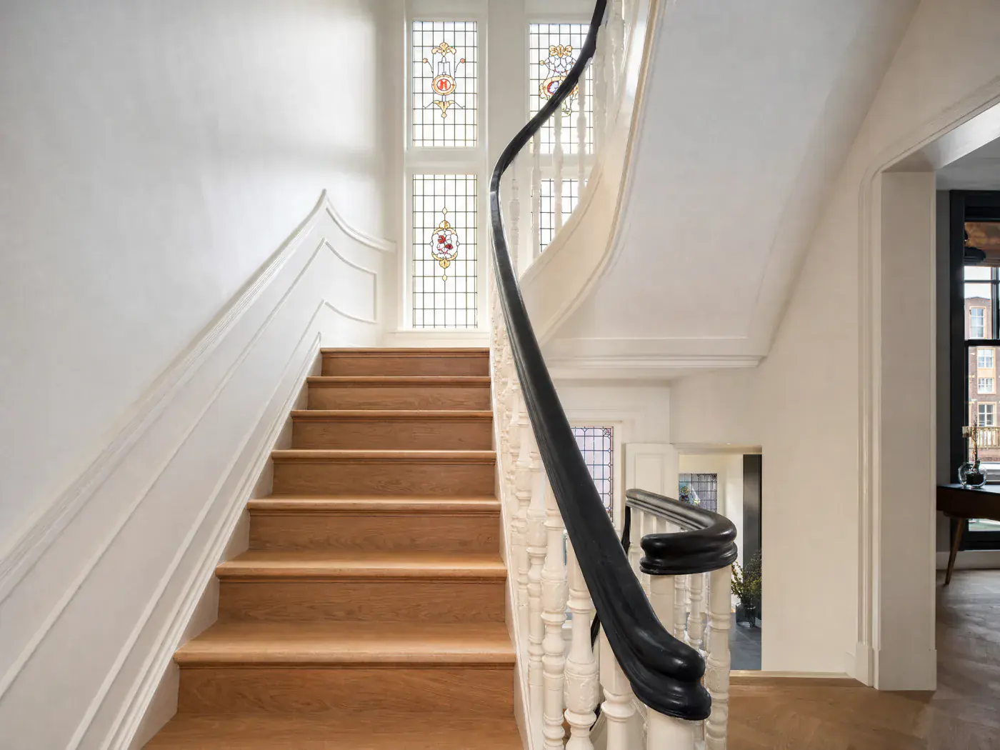
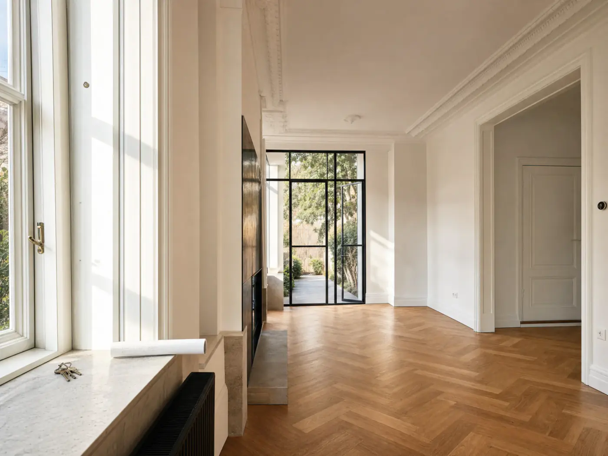
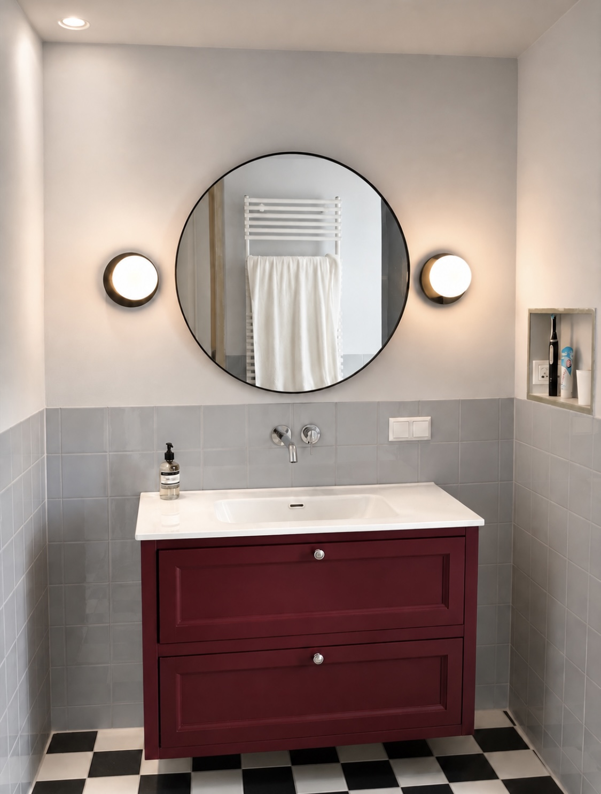
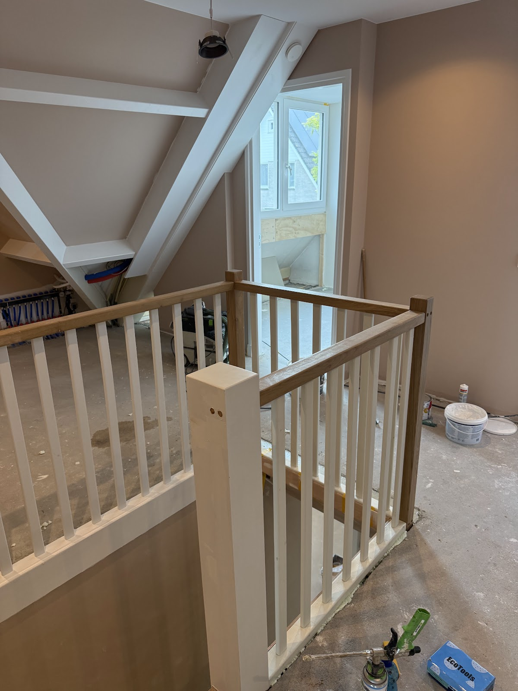
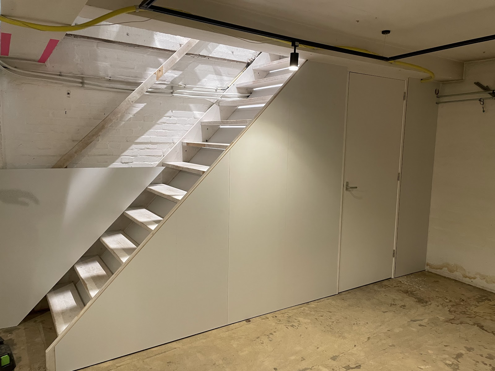
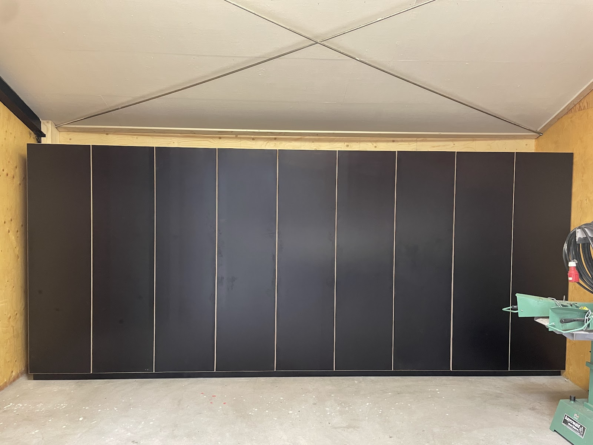
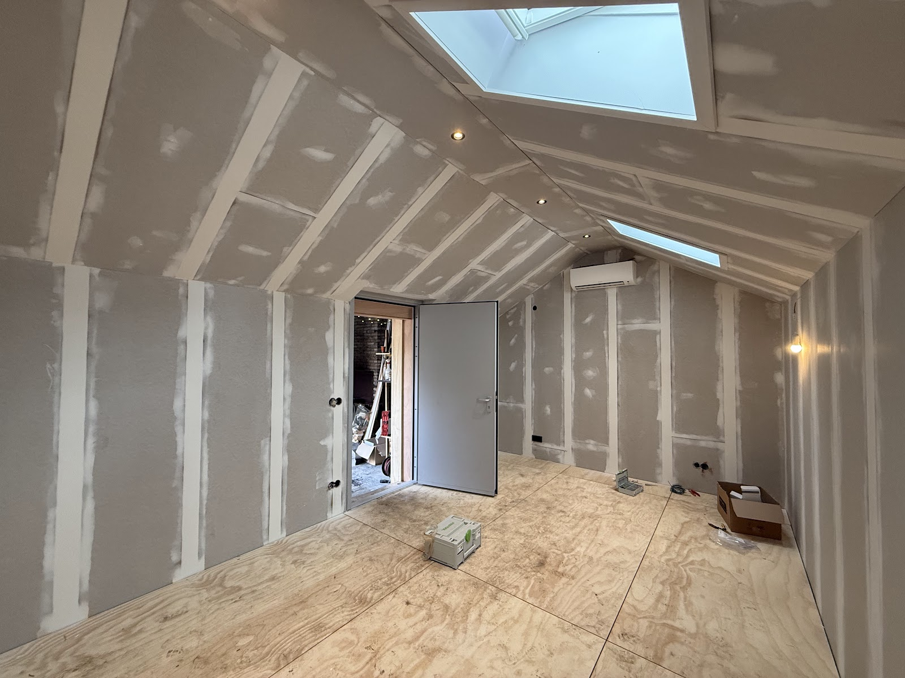
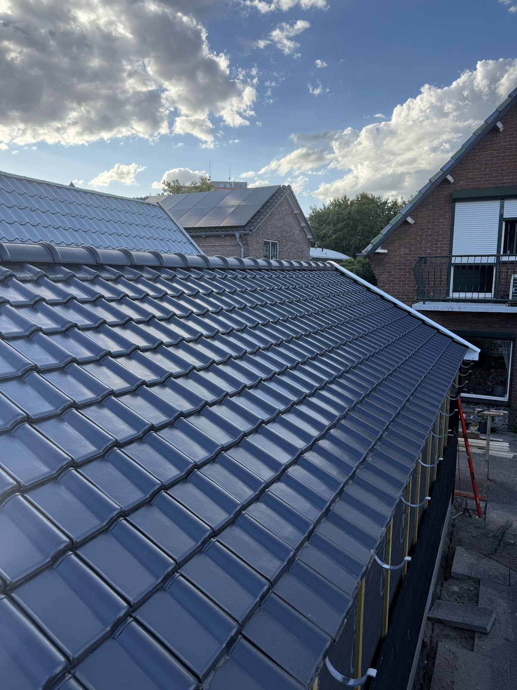
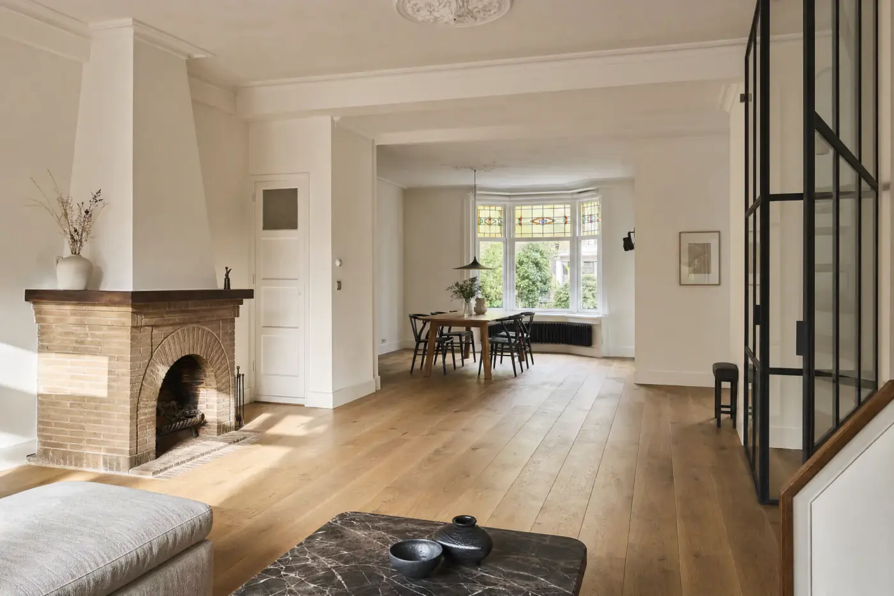

Aannemer en renovatie in Arnhem, van A tot Z
we bouwen alsof we er zelf gaan wonen.
Freiwerk neemt de complete verbouwing aan: sloop, constructie, installaties, afbouw en timmerwerk op maat. Van badkamer tot het hele huis, met één aanspreekpunt en één planning.

“Je merkt dat hij niet voor de snelste weg kiest maar voor het mooiste resultaat.”
5,0
uit 10 reviews op Google
één partij. alles geregeld.
We houden het simpel: we luisteren naar jouw ideeën, maken een plan en voeren dat goed uit. Je weet wat er gebeurt, wanneer het gebeurt en wat het kost. Eén aanspreekpunt, één planning, een vast team van vakmensen.
Freiwerk begon als timmerbedrijf. Opdrachtgevers vroegen steeds vaker om meer, en zo werd het de hele verbouwing. Inmiddels 10 jaar ervaring, met een voorliefde voor bestaande panden: paneeldeuren, lijstwerk, een trap met karakter. En als het moet een nieuwe uitbouw met strakke lijnen. We weten wanneer wat past.
- Eén aanspreekpuntVan eerste idee tot oplevering.
- MeedenkenNiet alleen uitvoeren wat op papier staat.
- Alles onder één dakRuwbouw, installaties, afwerking en maatwerk.
- Korte lijnenDirect contact met wie het werk doet.

recent werk, zoals het echt is.
Foto's van lopende en opgeleverde klussen. Meer op Instagram: @freiwerkrenovatiemaatwerk.






elf vakgebieden. één partij.
De basis
timmerwerk op maat
Kasten, trappen, deuren, wanden, lijstwerk en alles wat precies moet passen. Freiwerk begon als timmerbedrijf en het timmerwerk is gebleven wat het was: het werk waar we om bekendstaan.

- complete renovatie
- Het hele huis of pand in één keer: sloop, constructie, installaties, afbouw en maatwerk.
- badkamer
- Van slopen tot leidingwerk, elektra, waterdicht maken, tegelwerk en maatwerk.
- toilet
- Inbouwreservoir, fontein en tegelwerk. Klein vertrek, precies werk.
- constructiewerk
- Dragende muren eruit, stalen balken erin, doorbraken en nieuwe vloeren. Met een constructeur en de juiste berekening.
- afwerking
- Plinten, aftimmeren, kitwerk, vloeren en details. Het verschil tussen af en echt af.
- elektra
- Groepenkast, bedrading, verlichting en aansluitingen, aangelegd voordat alles dichtgaat.
- loodgieterswerk
- Water, afvoer, verwarming en vloerverwarming. Je ziet het niet, je merkt het wel.
- stuc- & schilderwerk
- Strakke wanden en plafonds, schilderwerk binnen en buiten.
- tegelwerk
- Wand- en vloertegels in badkamer, toilet en keuken. Waterdicht eronder, strak erboven.
- metselwerk
- Nieuwe muren, dichtgezette openingen, gevelherstel en uitbouwen die aansluiten op het bestaande.
zo werken we.
Zes stappen, van kennismaken tot oplevering. De offerte is compleet, zodat er onderweg niets bijkomt.
-
1
kennismaken
We luisteren naar je plannen. Daarna weet je of het past en wat de eerste stap is.
-
2
bekijken
We lopen door het pand en kijken wat er constructief en praktisch kan.
-
3
plan & offerte
Indeling, materialen en details op papier, met een offerte waarin alles staat.
-
4
voorbereiden
Vergunningen, constructeur, materialen en de juiste vakmensen op het juiste moment.
-
5
verbouwen
Van sloop en ruwbouw via installaties naar afwerking en maatwerk. Met één aanspreekpunt.
-
6
opleveren
Samen door het huis, punt voor punt. En daarna blijven we bereikbaar.
wat opdrachtgevers zeggen.
5,0 uit 10 reviews op Google, in hun eigen woorden.
“Wietse heeft onze hele verbouwing gedaan en we zijn echt superblij met hem. Hij schakelt snel, denkt mee, is creatief en komt met slimme oplossingen. En niet onbelangrijk: hij heeft smaak. Je merkt dat hij niet voor de snelste weg kiest maar voor het mooiste resultaat. Ik zou Wietse echt zonder enige twijfel aan iedereen aanbevelen.”
“Wij hadden een uitdagende verbouwing van een oud pand dat Wietse perfect heeft opgeknapt. Altijd in overleg en meedenkend over klassieke details, extra opbergruimte en hij weet hoe hij kwaliteit levert.”
“Zijn we superblij met Freiwerk Timmerwerken! Hij heeft onze hele verbouwing perfect gedaan: van de planning en alle regelwerk tot de super nette afwerking. Alles klopte en het ziet er fantastisch uit. Echt een vakman die meedenkt en zijn afspraken nakomt. 5 sterren zonder twijfel!”
“Ons hele huis perfect verbouwd. Fijn & flexibel in communicatie, denkt mee met elke stap. Zeker een aanrader!”
“Creatief meedenkend en buitengewoon handig! Absoluut een bedrijf dat ik mensen ga aanraden!”
“Mooi werk, duidelijke communicatie. Goede vent! Betrouwbaar en professioneel”
“Kan super snel schakelen en levert echt vakwerk! Thanks!”
“Het contact tot nu toe is heel fijn. Snel en flexibel.”
“Fijn bedrijf om mee samen te werken!”
werkgebied
Vanuit Boulevard Heuvelink in Arnhem werken we in de hele stad en direct eromheen: Velp, Oosterbeek, Renkum, Rheden, Duiven, Westervoort, Zevenaar, Elst en Huissen.
benieuwd wat we voor je kunnen doen?
Vertel kort wat je voor ogen hebt, van een badkamer tot het hele huis. Dan komen we langs om het pand te zien. Bellen kan altijd.
- Telefoon
- 026 234 0774
- info@freiwerk.nl
- Adres
- Boulevard Heuvelink 104 B
6828 KT Arnhem - Bereikbaar
- Maandag tot en met vrijdag, 07:00 tot 17:00